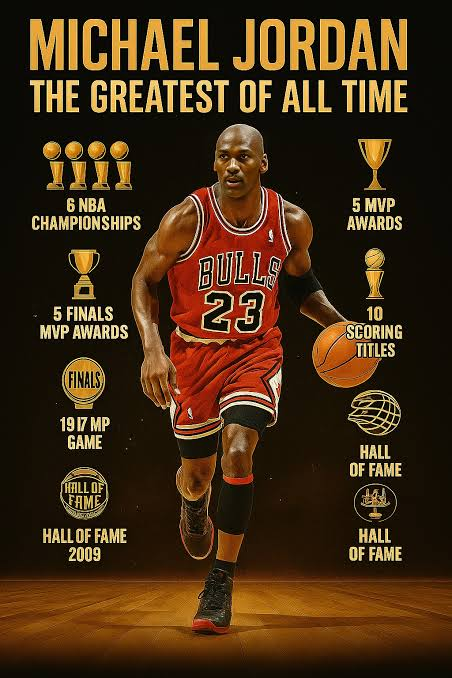

CARRIERE PROFESSIONNELLE
NBA draft 1984: 1er tour, 3ème position Franchise: Chicago Bulls.
Année professionnelle: 1984–1993, 1995–1998, 2001–2003.
Position: Shooting guard / small forward.
Numéro: 23, 45.
1984–1993: Chicago Bulls, 1995–1998: Chicago Bulls, 2001–2003: Washington Wizards.

PALMARÈS
No. 23 retiré par les Nord Carolina Tar Heels
3× USA Basketball Athlète de l'année (1983, 1984, 1992)
McDonald's All-American (1981)

COMPÉTITIONS INTERNATIONALES
Médailles olympiques
Sélection des États-Unis de basket-ball.
2 Médailles d'or : 1ère place en 1984 à Los Angeles et en 1992 à Barcelone .
Tournoi des Amériques de basket-ball
Médaille d'or : 1ère place 1992 Portland
Jeux Pan Americain
Médaille d'or : 1ère place 1983 Caracas